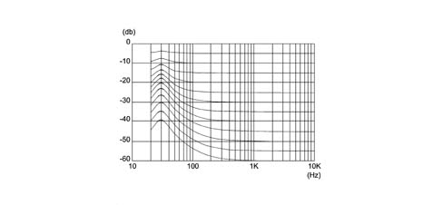
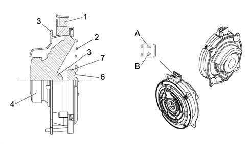

5570T car radio and car telephone
- Path
- Descriptions > 55 ELECTRICAL EQUIPMENT > 5570 ACCESSORIES > 5570T car radio and car telephone
- Kind
- system description
- Applies to
- all engines; all production periods
- Interactive page
- https://sloeber94.github.io/elrnDB-a156/en/#/3232969
Applies to: all engines; all production periods; only with equipment: BOSE System
SPECIFICATIONS
A sophisticated 'Bose' HI FI system with special speakers and an outside amplifier is available on request.
FUNCTIONS
The system has been developed ad hoc for the vehicle: the acoustic properties of the passenger compartment have been carefully designed so that the amplifier and the speakers are perfectly suited to the vehicle: the sound is excellent throughout the passenger compartment.
In addition, the system blends in perfectly with the aesthetics of the vehicle, without taking up extra space.
The system is installed in the vehicle directly in production, without any operations afterwards: the cables are incorporated in the vehicle wiring.
It is therefore advisable not to modify the original system in any way (e.g. graphic equalizers, additional sub-woofers, extra amplifiers).
In addition, the system components (amplifier and speakers) should not be repaired individually, but can only be replaced with new components.
PERFORMANCE
The Bose system guarantees the highest quality sound, with crystal clear high notes and deep, rich low tones.
With the following specifications:
- Volume compensation, through the 'active' Bose equalizing
- High/low tone control, from + 6dB to - 12 dB
- Fader control, through the Bose 'spatial' fader

Optimum frequency response, according to graphics given below:
- Output distorsion < 2%, with all controls at maximum
- Dynamic output range > 112 dB
- Cassette reproduction interference reduction, with Dolby type B NR
COMPOSITION
Unlike the system fitted as standard, the Bose system includes:
- special coaxial type speakers in the front and rear doors (with tweeters incorporated)
- rear subwoofer speaker
- high power amplifier
The other components (radio, aerial, etc.) are the same as those on the system fitted as standard.
FRONT SPEAKERS
Specifications
The speaker for the HI FI systems which are matched with BOSE systems have coaxial specifications, i.e. a single container houses a mid-range and a tweeter. The speaker has one single supply connector.
Location
The front speakers are located in the lower partof the doors.
Type
The high fidelity BOSE speakers are composed of a magnetic ferrite core for both the mide range speakers and the tweeter, in addition, the mid range speakers have a treated paper membrane and textile material. The moving coil support is made from aluminium.
The tweeters have a plastic membrane and a support for fitting co-axially on the mid- range.

1 - Two way audio template 2 - Tweeter support 3 - Drip tray 4 - Mid-range magnetic assembly 5 - Mid-range 6 - Tweeter 7 - Tweeter magnetic assembly A - Negative B - Positive
REAR SPEAKERS
Specifications
See front speakers.
Location
The rear speakers are located in the rear panel.
REAR WOOFER SPEAKER
Specifications
This is a hifi woofer speaker, diameter 8 '(225 mm), 5 Ohm, fitted with a special bass box incorporated which diffuses the sound in an optimum manner preventing vibrations and interference.
Location
It is located on the left hand side of the rear parcel shelf (Saloon) or in the rear compartment, on the left side integrated in the amplifier (Station Wagon).
AMPLIFIER
Specifications
It is a 5 channel, hifi amplifier with 200W power, 4 analogue amplifiers and a 100W class D impulse amplifier.
The amplifier has 4 stereo channels for the speakers in the front and rear doors and a mono channel for the rear woofer.
The amplifier is equipped with a built in equalizer and compressor.
The high resolution equalizer is specially calibrated in the vehicle passenger compartment because it takes into account the vehicle absorption and reflection surfaces (seats, windows, dashboard, door panels) and the position of the speakers and the passengers.
The 'two stage' technology allows high power with compact dimensions and reduced heat emission compared with a traditional linear amplifier.
The amplifier is fitted with:
- an integrated signal processor, which actively adapts the bass;
- an active equalizer, with automatic electronic balancing of all outputs
- an integrated compressor which minimizes distortions
AMPLIFIER CONNECTION PIN OUT
PIN | SIGNAL | TYPE |
|---|---|---|
1 | N.C. | |
2 | N.C. | |
3 | - front speaker left | |
4 | - front speaker right | |
5 | - rear speaker left | |
6 | - rear speaker right | |
7 | + rear speaker right | |
8 | + rear speaker left | |
9 | + front speaker right | |
10 | + front speaker left | |
11 | earth | |
12 | +30 | |
13 | +30 | |
14 | + woofer | |
15 | - woofer | |
16 | - front speaker left | |
17 | + front speaker left | |
18 | + front speaker right | |
19 | - front speaker right | |
20 | + rear speaker left | |
21 | - rear speaker left | |
22 | + rear speaker right | |
23 | - rear speaker right | |
24 | earth | |
25 | + 15 |
Location
It is located in the rear compartment on the left hand side.
On the version with a NAVIGATOR, an interface connecting the radio navigator and the BOSE amplifier is required.
This interface has the following pin-out:
PIN | SIGNAL |
|---|---|
1 | Control from radio front left + |
2 | Control from radio front right + |
3 | Control from radio rear left + |
4 | Control from radio rear right + |
5 | Joint control - from radio for speakers |
6 | Switch supply |
7 | Earth |
8 | N.C. |
9 | Front output left + for Bose |
10 | Front output left - for Bose |
11. | Front output right + for Bose |
12. | Front output right - for Bose |
13 | Rear output left + for Bose |
14 | Rear output left - for Bose |
15 | Rear output right + for Bose |
16 | Rear output right - for Bose |
17 | N.C. |
18 | N.C. |
Configuration check
All versions of the radio used on the vehicle can be connected to a Bose HIFI system: the radio therefore has to 'recognize' the presence of the system in question.
This recognition is carried out in the factory and the vehicle reaches the Service Network already correctly configured.
In some cases, however, there may be the need to intervene (e.g. when installing a new radio): proceed by pressing the buttons shown to check the Bose configuration or, to switch from the standard system to the Bose system (press the buttons with the radio off, then switch it back on, keeping the buttons pressed)
Radio with CC or CD:
FUNCTION | COMBINATION OF BUTTONS |
|---|---|
Bose check | automatic |
Switching to Bose | automatic |
Standard CONNECT device:
FUNCTION | COMBINATION OF BUTTONS |
|---|---|
Bose check | AUDIO + 2 +ON |
Switching to Bose | AUDIO + 1 +ON |
Radio with NAVIGATOR OR CONNECT NAV:
FUNCTION | COMBINATION OF BUTTONS |
|---|---|
Bose check | ON + AUD + ST2 (*) |
Switching to Bose | ON + AUD + ST1 (*) |